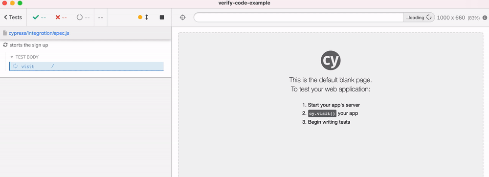
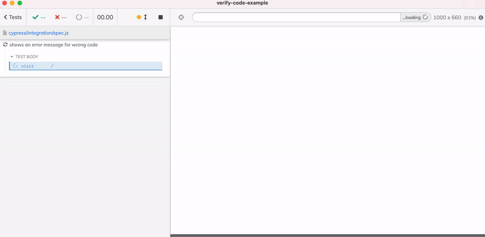
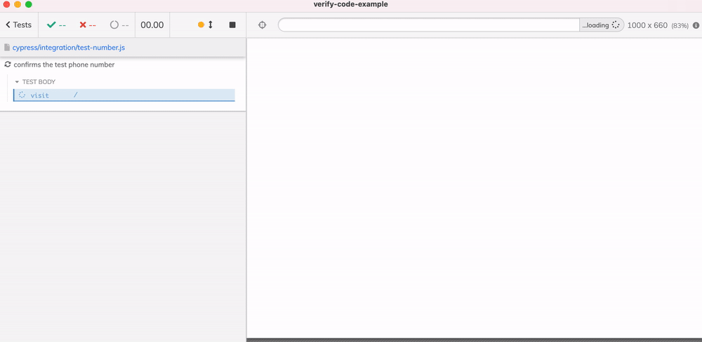
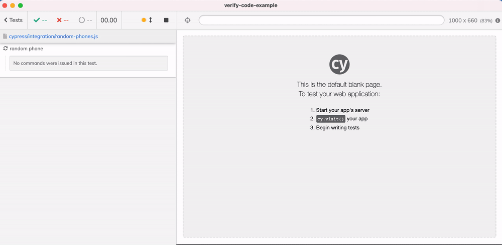
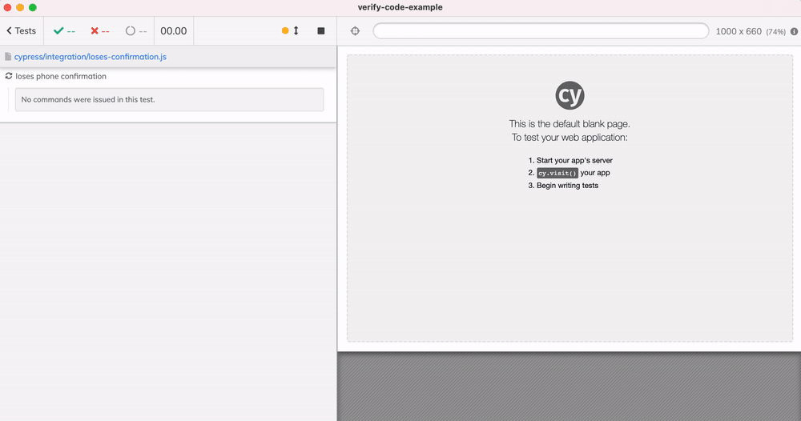

An example end-to-end testing approach to the web application that require phone number verification.
Let's take a look at a typical web application that makes the users sign up using a phone number. We want to verify the user via a phone number to avoid bots and spam accounts. We can ask for the user's phone number during the sign-up step, then send an SMS code, and then the user should enter that code. If the code matches the one we have sent, the phone has been verified.
Notice the phone, phoneConfirmationCode, and isPhoneVerified columns are optional.
Fake username and email
We can generate a random fake username and email during the end-to-end test. We could use a library or just get random strings using the Lodash _.random method. Our test starts with entering these inputs.
cypress/integration/spec.js
1 2 3 4 5 6 7 8 9 10 11 12 13 14
/// <reference types="cypress" />
// Lodash library is bundled with Cypress const { _ } = Cypress;
it('fails with the wrong code', () => { cy.visit('/');
posting new user: { username: 'test-8773', email: 'test-8773@example.com' } New user id: 52 < #2 200 [+473ms]
{ userId: 52 } POST /signup.json 200 497.528 ms - -
The relevant part of the code inserts the new record.
1 2 3 4 5 6 7 8 9 10 11 12 13 14 15 16 17
console.log('posting new user:', body); const userId = awaitnewPromise((resolve, reject) => { connection.query('INSERT INTO users SET ?', body, function (error, results, fields) { if (error) { console.error(error); returnreject(error); } console.log('New user id: %s', results.insertId); resolve(results.insertId); });
connection.end(); });
return { userId };
We have a new user without a phone number yet. The user provides a phone number on the next step of the sign up process.
Adding the phone number
We can enter a test number from the test. For now, let's use a hardcoded number from a non-existent area code 555.
1 2 3 4 5
cy.get('[name=phone]') // add 1 second delay to show the number // in the video .wait(1000) .type('555-123-4060{enter}', { delay: 75 });

The phone number is sent with the user id to the backend API.
The verification code
Our API generates a random verification code. The code is sent to the given phone number via a 3rd party service (let's pretend), and the code is saved into the user's record.
// save the random phone verification code // and "send" the phone verification code via SMS // (in this demo we are NOT sending the verification code via SMS) awaitnewPromise((resolve, reject) => { connection.query( { sql: ` UPDATE users SET phone = ?, phoneConfirmationCode = ?, isPhoneVerified = false WHERE user_id = ? `, values: [phoneNumber, phoneConfirmationCode, userId] }, function (error, results, fields) { if (error) { console.error(error); returnreject(error); } console.log('for user %s set phone %s', userId, phoneNumber); console.log( 'The phone confirmation code with this phone is %s', phoneConfirmationCode ); resolve(); } ); }); // use 3rd party SMS service awaitsendSMS(phoneNumber, phoneConfirmationCode);
We could also add a timestamp, etc, to make the phone verification stronger. But for the demo purposes, the code above is enough.
Confirming the code
The web UI is waiting for the user to enter the SMS code. Once the code is entered, it is compared to the code in the user's record. If they match, the user is confirmed.
// look up the code verification from the database const expected = awaitnewPromise((resolve, reject) => { connection.query( { sql: 'SELECT phone,phoneConfirmationCode FROM users WHERE user_id = ?', values: [userId] }, function (error, results, fields) { if (error) { console.error(error); returnreject(error); } const expected = results[0]; console.log( 'user %s expected phone %s confirmation %s', userId, expected.phone, expected.phoneConfirmationCode ); resolve({ phone: expected.phone, phoneConfirmationCode: expected.phoneConfirmationCode }); } ); });
if (expected.phone !== phoneNumber) { const error = 'Phone number does not match'; console.error(`Error: ${error}`); connection.end(); return { error }; }
if (expected.phoneConfirmationCode !== code) { const error = 'Wrong confirmation code'; console.error(`Error: ${error}`); connection.end(); return { error }; } // user phone number is confirmed 🎉 // update the user - the phone number is confirmed awaitnewPromise((resolve, reject) => { connection.query( { sql: ` UPDATE users SET isPhoneVerified = true, phoneConfirmationCode = NULL WHERE user_id = ? `, values: [userId] }) })
We also check the database for any other user with the same phone number - we must remove the verified flag, since the phone number now belongs to another user.
// any existing user with the same phone number should // lose their phone verified status awaitnewPromise((resolve, reject) => { connection.query( { sql: ` UPDATE users SET phoneConfirmationCode = NULL, isPhoneVerified = false WHERE phone = ? AND isPhoneVerified = true `, values: [phoneNumber] }, function (error, results, fields) { if (error) { console.error(error); returnreject(error); } console.log('removed phone %s for any existing users', phoneNumber); resolve(); } ); });
Let's look at how we can write end-to-end tests that have to register new users and confirm the phone numbers.
Send the wrong code
Our test has no idea what the phone confirmation code is. Thus it can simply confirm the wrong code generates an error message that is shown to the user.
// use a wrong code on purpose cy.get('[name=code]').type('0000', { delay: 75 }); cy.get('button').click(); cy.contains('.error-message', 'Wrong confirmation code').should('be.visible'); });

Great, the wrong code is rejected, but how do we really verify the user during the test?
Use a special test number
Let's add a custom logic for allowing users with a special test numbers in. For example, we could specific via an environment variable TEST_PHONE_NUMBER. If this number arrives, we know this is an E2E test user, and thus skip sending the confirmation number via SMS. We also save a pre-determined code in the database.
api/src/phone.js
1 2 3 4 5 6 7 8 9 10 11 12 13 14
const { userId, phoneNumber } = awaitjson(req); console.log('adding phone %s for user %d', phoneNumber, userId);
let phoneConfirmationCode; const specialTestNumber = process.env.TEST_PHONE_NUMBER; if (specialTestNumber && phoneNumber === specialTestNumber) { // the test user! use the same code and do not send it // just store in the database phoneConfirmationCode = '4467'; // do not send this code via SMS service } else { // generate a random code, send it via SMS to the phone number phoneConfirmationCode = String(Math.random()).slice(2, 6); }
The spec can hard-code the phone number and the code, or read it using Cypress.env method. See my blog post Keep passwords secret in E2E tests how to do so. In my case, I just put the numbers into the spec file.
cypress/integration/test-number.js
1 2 3 4 5 6 7 8 9 10 11 12 13 14 15 16 17 18
it('confirms the test phone number', () => { cy.visit('/');
// when using the special phone number above // we can validate it using this code cy.get('[name=code]').type('4467', { delay: 75 }); cy.get('button').click(); cy.get('[data-cy=PhoneVerified]').should('be.visible'); });

Use alternative: use test number prefix
Using a single special phone number leads to the problems down the line. Because a single user at a time can have the test phone number and have it verified, one test can kick out another test in the middle of the run. We will see a test that verifies this is happening later. Thus as an alternative, I suggest using not the exact test phone number, but a test phone prefix. Any number that starts with the test phone prefix should be considered the test user, and could be verified using the same hard-coded test code (or some other similar scheme).
If we used TEST_PHONE_NUMBER=555-909-0909 before, we can chop off the last two digits to produce 100 test numbers. If we pick the test number randomly, the chance of collision is minimal. If the collisions still happen, we can chop off the last three digits to have a 1000 test phone numbers. We could also enable test retries to re-run the failed test and get through a temporary set back.
api/src/phone.js
1 2 3 4 5 6 7 8 9 10 11 12 13 14 15 16
let phoneConfirmationCode; if (process.env.TEST_PHONE_NUMBER && phoneNumber === process.env.TEST_PHONE_NUMBER) { // the test user! use the same code and do not send it // just store in the database phoneConfirmationCode = '4467'; } elseif ( process.env.TEST_PHONE_NUMBER_PREFIX && phoneNumber.startsWith(process.env.TEST_PHONE_NUMBER_PREFIX) ) { // the test user that uses the phone number prefix // to allow multiple test phone numbers phoneConfirmationCode = '4467'; } else { // generate a random code, send it via SMS to the phone number phoneConfirmationCode = String(Math.random()).slice(2, 6); }
The above code supports both methods just for clarity. It assumes that the environment variables are set like
Here is a test that draws a random number using _.random and _.padStart methods.
1 2 3 4 5 6 7
// pick a random phone number that starts with the // give prefix by adding two random digits to it. const testNumberPrefix = '555-909-09'; // using _.random with _.padStart to make sure // any shorter number is padded with leading zeroes const phoneNumber = testNumberPrefix + _.padStart(_.random(0, 100), 2, '0'); cy.get('[name=phone]').type(`${phoneNumber}{enter}`, { delay: 75 });
The test passes with a random number.

Tip: it is a good idea to move test phone number generation into a utility method to be imported into any spec that needs to verify the user's phone.
Looking up the user
What if our API has a method to look up the user by the username? Maybe we could expose such API endpoint during testing and protect it using some kind of header or API key. This method could return the phone verification code and status.
const { params } = match(req, '/users/:username'); console.log('looking up user %s', params.username);
const user = awaitnewPromise((resolve, reject) => { connection.query( { sql: 'SELECT * FROM users WHERE username = ?', values: [params.username] }, function (error, results, fields) { if (error) { console.error(error); returnreject(error); }
if (!results.length) { console.error('Could not find user with username %s', params.username); returnreject(newError('Unknown user')); }
console.log(results); // return all fields except for ID // also convert the isPhoneVerified to boolean resolve({ ...results[0], isPhoneVerified: results[0].isPhoneVerified === 1, user_id: undefined }); } ); });
Our test could fetch the user information after each action to confirm the backend is updating the fields correctly. We can use the built-in cy.request command:
// Lodash library is bundled with Cypress const { _ } = Cypress;
constgetUserInfo = (username) => // use the API url to request the user info // https://on.cypress.io/request cy.request(`http://localhost:4343/users/${username}`).its('body');
it('looks up the user via API call', () => { cy.visit('/');
// important: wait for the next page to load // to know for sure the API call has finished cy.get('[name=phone]').should('be.visible');
// find the user information and confirm the user has // no phone and no confirmation code getUserInfo(username).should('deep.include', { username, email, phone: null, phoneConfirmationCode: null, isPhoneVerified: false });
// again, wait for the next page to load before checking the API cy.get('[name=code]').should('be.visible')
// the user should have the random code and phone number set getUserInfo(username) .should('deep.include', { username, email, phone: phoneNumber, isPhoneVerified: false }) // confirm the code is a string of 4 digits .its('phoneConfirmationCode') .should('match', /^\d{4}$/) .then((code) => { // let's use the fetched code to verify the phone number cy.get('[name=code]').type(code, { delay: 75 }); cy.get('button').click(); cy.get('[data-cy=PhoneVerified]').should('be.visible');
Tip: to confirm multiple properties inside an object, I suggest using cy-spok. It supports exact matches and properties using a very intuitive syntax and produces good output in the Cypress Command Log column.
Testing the number transfer
In our application, if the user has verified the number, then any other user who has previously had this number verified, loses that status. Let's confirm this via testing.
cy.log('**first user**'); signup(firstUser, firstEmail, phoneNumber); getUserInfo(firstUser).should('deep.include', { phone: phoneNumber, isPhoneVerified: true }); cy.log('**second user**'); signup(secondUser, secondEmail, phoneNumber); getUserInfo(secondUser).should('deep.include', { phone: phoneNumber, isPhoneVerified: true }); // the first user no longer has verified phone number getUserInfo(firstUser).should('deep.include', { phone: phoneNumber, isPhoneVerified: false }); });
The video shows the two users sign up, then the first user loses its phone confirmed value.

There is nothing in the UI to show for this, because we are using the API response to confirm the change in the user record. Of course, in the real application, the backend would not return the user status this easily. We sometimes need to connect to the database from the test runner and check of ourselves. I plan to describe how to do so in the next blog post, so subscribe now to be notified when it comes out.